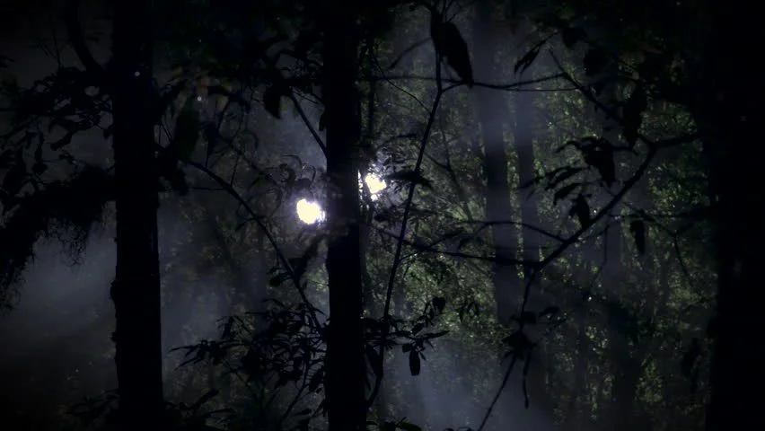

Drenthe is al lang de hotspot voor het zien van UFO's binnen Nederland. Doordat de provincie dunbevolkt is hebben we weinig lichtvervuiling. De verhalen van vreemde lichten in de lucht bestaan ook al lange tijd in de overleving van de provincie. Bij camping de Wilgenhoeve bieden wij UFO spotting nachten aan.

Aan de rand van het landgoed bevinden zich de oude maaivelden. Hier is een goed zicht op de nachthemel. Tijdens de alien avonden maken we een rondje langs alle velden zodat wij in alle richtingen kunnen kijken. Vooral boven de oude veengronden aan de oostkant van het landgoed zijn al vaak vreemde dingen in de lucht gezien. In 1956 is hier een vreemd object in het veen neergestort. Sinds die tijd lijkt de locatie actief bezocht te worden.
Alienspotten zomers
In de zomer spotten wij elke woensdagavond. We moeten dan wel later beginnen omdat het al wat later donker wordt. Rond 23:00 verzamelen wij ons bij de oude stal. We gaan dan eerst naar de zuidelijke velden. Hier zijn vaak de planeten die op dat moment aan de hemel staan goed te zien. De prime time voor waarnemingen bij de oostelijke moerassen is rond middernacht dus wij zorgen dat de groep daar rond die tijd is. Daarna gaan we, afhankelijk van de drukte die avond, nog naar het noordelijke of westelijke veld. Bij veel deelname splitsen wij de groep en gaan de verschillende groepen naar aparte velden zodat iedereen genoeg ruimte heeft en we niets wegjagen. We zijn rond 03:00 weer terug bij de tenten. 
Alienspotten in de winter
In de winter kunnen wij wat eerder beginnen. Ook deze spotavond is op woensdag. De groep verzamelt zich om 20:00 bij de stal. We gaan als groep naar het oostelijke veld. Het is belangrijk dat wij als groep die kant op gaan. We willen niet dat ongeduldige mensen weer verdwijnen. We blijven tot iets na middernacht bij het oostelijke veld. Als er veel activiteit is kunnen we daar wat langer blijven. Daarna gaan we nog naar een van de andere velden. Welk veld laten wij aan de groep over.
Belangrijk
- Ook in de zomer kan het 's nachts flink afkoelen zorg dat je warm aangekleed bent. - Wij zorgen voor een hapje en een drankje op locatie. Alcohol is niet toegestaan. - De spotavond is niet bedoeld voor kinderen. Kinderen mogen mee maar de organisatie is niet verantwoordelijk - De lichten in het bos en boven het veen zien er mooi uit. Volg ze niet!